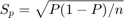

Chapter 06: Confidence Interval
Selected solutions for Chapter 06 Confidence Interval
* Reference: Statistics Unplugged 3rd Edition * Zihan Chen * 2015-03-26
Contents
Confidence Interval with Known
clc; clear; % Question 2 (P145) m = 150; % mean 150 sigma = 12; % sigma 12 (population std) n = 25; % sample size 25 % Standard Error of the Mean stdm = sigma/sqrt(n); % 95 CI sl95 = 0.05; % significance level cv95 = norminv(1-sl95/2); ci95 = [m-cv95*stdm, m+cv95*stdm]; % 99 CI sl99 = 0.01; cv99 = norminv(1-sl99/2); ci99 = [m-cv99*stdm, m+cv99*stdm]; % Print Answer disp('Answer:'); disp(['0.95 CI = ',num2str(ci95(1)),', ',num2str(ci95(2))]); disp(['0.99 CI = ',num2str(ci99(1)),', ',num2str(ci99(2))]);
Answer: 0.95 CI = 145.2961, 154.7039 0.99 CI = 143.818, 156.182
Confidence Interval with Unknown
clc; clear; % Question 2 (P146) m = 26; % mean 26 s = 5; % sample std 5 n = 30; % sample size 30 % Estimated Standard Error of the Mean stdm = s/sqrt(n); dof = n-1; % degrees of freedom % NOTE: t distribution % 95 CI sl95 = 0.05; % significance level cv95 = tinv(1-sl95/2, dof); ci95 = [m-cv95*stdm, m+cv95*stdm]; % 99 CI sl99 = 0.01; cv99 = tinv(1-sl99/2, dof); ci99 = [m-cv99*stdm, m+cv99*stdm]; % Print Answer disp('Answer:'); disp(['0.95 CI = ',num2str(ci95(1)),', ',num2str(ci95(2))]); disp(['0.99 CI = ',num2str(ci99(1)),', ',num2str(ci99(2))]);
Answer: 0.95 CI = 24.133, 27.867 0.99 CI = 23.4838, 28.5162
Confidence Interval Problems for a Proportion
Estimated Standard Error of the Mean:

clc; clear; % Question 3 p = 0.32; n = 200; % Estimated Standard Error of the Mean stdm = sqrt(p * (1-p) / n); dof = n - 1; % t distribution sl95 = 0.05; % significance level cv95 = norminv(1-sl95/2); ci95 = [p-cv95*stdm, p+cv95*stdm]; % Print Answer disp('Answer:'); disp(['0.95 CI = ',num2str(ci95(1)),', ',num2str(ci95(2))]);
Answer: 0.95 CI = 0.25535, 0.38465